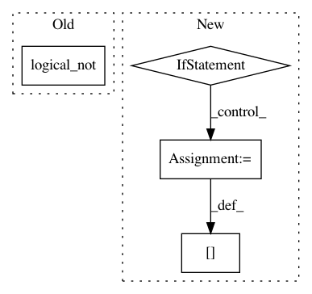

aadd7d651389f213aaf33b08ab6f533a3ecc59db,cellprofiler/modules/correctilluminationcalculate.py,CorrectIlluminationCalculate,preprocess_image_for_averaging,#CorrectIlluminationCalculate#Any#,593
Before Change
if (self.intensity_choice == IC_REGULAR or
self.smoothing_method == SM_SPLINES):
if orig_image.has_mask:
pixels[np.logical_not(orig_image.mask)] = 0
avg_image = cpi.Image(pixels, parent_image = orig_image)
else:
avg_image = orig_image
After Change
labels[~ orig_image.mask] = -1
min_block = np.zeros(pixels.shape)
if pixels.ndim == 2:
minima = fix(scind.minimum(pixels, labels, indexes))
min_block[labels != -1] = minima[labels[labels != -1]]
else:
for i in range(pixels.shape[2]):
minima = fix(scind.minimum(pixels[:,:,i], labels, indexes))
min_block[labels != -1, i] = minima[labels[labels != -1]]
avg_image = cpi.Image(min_block, parent_image = orig_image)
return avg_image
def apply_smoothing(self, image, orig_image=None):
In pattern: SUPERPATTERN
Frequency: 3
Non-data size: 4
Instances
Project Name: CellProfiler/CellProfiler
Commit Name: aadd7d651389f213aaf33b08ab6f533a3ecc59db
Time: 2011-08-04
Author: leek@1fc53939-2000-0410-845c-e8453a809027
File Name: cellprofiler/modules/correctilluminationcalculate.py
Class Name: CorrectIlluminationCalculate
Method Name: preprocess_image_for_averaging
Project Name: biolab/orange3
Commit Name: ac892eddd865681c9746efeda9f1f094f26cc32f
Time: 2012-11-29
Author: janez.demsar@fri.uni-lj.si
File Name: Orange/data/filter.py
Class Name: Filter_IsDefined
Method Name: __call__
Project Name: sebp/scikit-survival
Commit Name: 0bed328fc01823df9a99af2b96441398fd35c938
Time: 2019-04-15
Author: sebp@k-d-w.org
File Name: sksurv/metrics.py
Class Name:
Method Name: _get_comparable